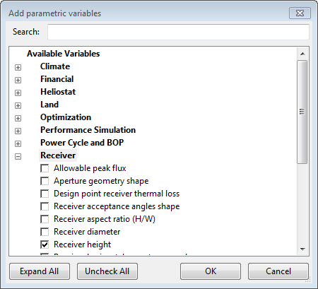
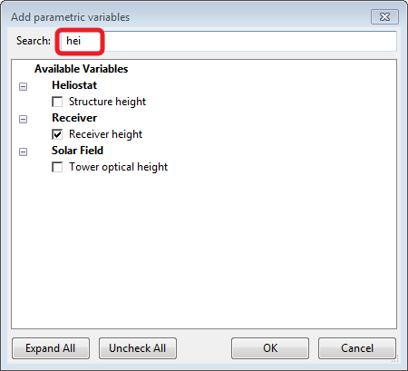
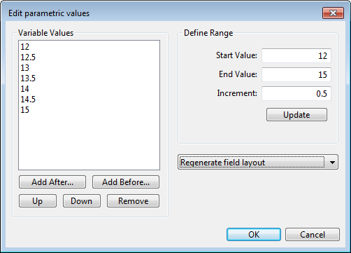
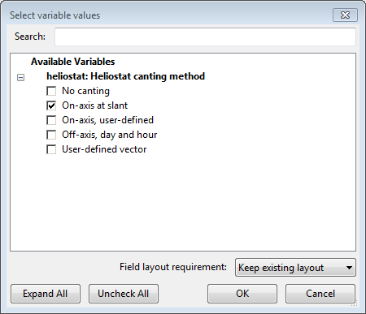

The Parametrics page provides options for constructing and executing batch runs of SolarPILOT. Parametric runs allow you to lay out and/or characterize a field over a range of parameter values. Multiple parameters can be varied. The three run types are described as follows:
Parametric Simulation Setup allows you to select any number of parameters from a list then enter values that are to be assigned in subsequent runs. Use this option for a quick parametric analysis in which all variable combinations (excepting linked values -- see below) are evaluated.
After clicking the Add button, you will be presented with a dialog listing all of the possible parametric variables for SolarPILOT. Use the dialog to select the variables that you would like to parameterize. You can search the dialog for keyword names (figure - right) and filter options that match your query. After you have completed your selection(s), click OK to accept or Cancel to return without adding the selected variables.
 
Once variables have been added to the parametrics list, they can be removed by selecting the variable in the list and clicking Remove. Use caution, as this cannot be undone!
The edit variable values button launches a dialog in which you can specify which values the specified parameter will assume. SolarPILOT will provide one of three dialog types, depending on the data type of the parameter that you select. If the parameter is continuous, the dialog will allow you to assign a discrete set of values over a continuous range. If the parameter is a drop-down menu, the available options will be displayed with check-boxes, and if the parameter is the weather file location, a list of weather files is provided.
For each parameter, you can choose whether the heliostat field will be regenerated (a new layout created) when the parameter value changes, or whether the existing layout should be used. Note that the existing layout option requires that you have previously created a solar field layout.
The continuous parameter dialog provides controls for adding and removing values, moving values up and down in the list, and specifying a range with increments.

The edit linkages button opens a dialog that allows you to specify which parameters are linked. If two or more parameters are linked, the parametric analysis steps through each combination sequentially rather than evaluating all combinations of the parameter values. For example, if receiver diameter and receiver height are parametrically linked with five unique values of each parameter specified, then SolarPILOT will evaluate five runs in which the height and diameter parameters are assigned each of the five values in sequence. If parameters are not linked, all parameter combinations are evaluated (in the example, this results in 25 runs, rather than 5).
Linked parameters must each have the same number of values.
Enable this option to save a file for each parametric run containing detailed heliostat field performance data. The file will be saved in the directory containing the case (.spt) file, or if the case is unsaved, in a directory that you choose when prompted by SolarPILOT.
Enable this option to save performance summary information for each parametric run.
Enable this option to save an image of the heliostat field with total optical efficiency plotted for each parametric run.
Enable this option to save an image of the flux profile on the receiver for each parametric run.
Enable this option to save flux intensity data on the receiver for each parametric run.
The Simulation Variable Table allows you to specify any number of parameters and any number of runs, and manually assign values for each variable and run. Use this option when you would like to analyze a particular selection of variable combinations that is less exhaustive than the full combinatorial space.
The variable table requires that you specify whether the layout must be regenerated on each simulation. You can indicate that a layout is required with any of the following text: 'y', 'yes', '1', 'true'.
The variable names are coded identifiers, and you can review the variable names by exporting to a CSV file with the Variables... button.
Specify the number of variables to be entered in the table. The number of variables does not include the required Regenerate Layout row in the table.
Specify the number of simulations to execute, equal to the number of columns in the table.
Import a parametric simulation table from a comma-separated file. The file format requires that the first row be named "Regenerate layout", and subsequent rows have the appropriate variable name provided. Columns in the imported table correspond to unique runs. An example imported table is shown as follows, where values would be comma-separated.
Regenerate layout |
n |
n |
n |
n |
n |
n |
n |
n |
fluxsim.0.flux_solar_az_in |
70.425 |
85.3915 |
105.5788 |
180 |
254.415 |
274.6048 |
289.571 |
76.173 |
fluxsim.0.flux_solar_el_in |
13.1508 |
37.1455 |
61.5609 |
78.5706 |
61.5657 |
37.1508 |
13.1553 |
9.4441 |
fluxsim.0.flux_dni |
665 |
928 |
978 |
1000 |
978 |
928 |
665 |
531 |
Export the simulation variable table contents to a comma-separated file.
Export the variables available for parametric simulation, showing the the coded name (which is required for the simulation variable table), current value, units variable label, and -- for dropdown items -- a list of possible values.
The following table is a sample of the output provided from this function:
ambient.0.atm_model |
DELSOL3 clear day |
none |
Atmospheric attenuation model |
[DELSOL3 clear day;DELSOL3 hazy day;User-defined] |
ambient.0.dni_layout |
950 |
W/m2 |
Constant DNI for layout calculations |
|
ambient.0.dpres |
1 |
atm |
Ambient pressure |
|
ambient.0.sun_csr |
0.1 |
none |
Circumsolar ratio |
|
ambient.0.sun_rad_limit |
4.65 |
mrad |
Sunshape angular extent |
|
ambient.0.sun_type |
Limb-darkened sun |
none |
Sunshape model |
[Pillbox sun;Gaussian sun;Limb-darkened sun;Point sun;Buie CSR;User sun] |
financial.0.contingency_rate |
7 |
% |
Contingency |
|
financial.0.heliostat_spec_cost |
180 |
$/m2 |
Heliostat field |
|
financial.0.land_spec_cost |
10000 |
$/acre |
Land cost per acre |
|
financial.0.plant_spec_cost |
1200 |
$/kWe |
Power block and plant |
|
financial.0.rec_cost_exp |
0.7 |
none |
Receiver cost scaling exponent |
|
financial.0.rec_ref_area |
1571 |
m2 |
Receiver reference area |
|
............ |
The variable table contains the information needed to set parameter values for each run. You can enter and modify data in the table.
Enable this option to export detailed heliostat performance data for each parametric run.
Enable this option to export system performance summary data for each parametric run.
The SAM Batch Simulation is a macro that generates solar field optical efficiency and receiver flux profiles as a function of sun position over a range that you specify. This information is used in the SAM Generic CSP System model, or can be assigned in the scripting options for the SAM Molten Salt Power Tower model. Use this option when you want to characterize flux and efficiency over a range of sun positions.
Run the SAM input data parametric.
Specify the folder that will contain the efficiency and fluxmap output files.
Specify the name of the heliostat field optical efficiency file.
Specify the name of the receiver fluxmap file.
Choose the format for solar positions that will be used to generate the efficiency and fluxmap values.
Space the solar positions such that the separation between zenith positions is constant between daily profiles that are evaluated. This method chooses eight days in the year and evaluates performance at intervals of every other hour centered about solar noon. Depending on location, approximately 44 solar positions are evaluated, and only sun positions that are viable for the given location are considered.
Space the solar positions such that azimuthal and zenith positions are evenly spaced on a grid that covers the entire sky, including sun positions outside of the range of possibility for the given location.
Choose the dimensionality of the receiver flux map data output.Each solar position that is evaluated will generate the fluxmap data as specified with the following options:
Use the fluxmap format required by SAM, which is a 12 points circumferentially and 1 point vertically.
Generate a 12 x 10 (horizontal and vertical, respectively) flux map array for each sun position.
Generate a fluxmap array for each sun position using the dimensions specified on the Performance simulation page.
You can choose whether to output fluxmap data that is dimensional or that is normalized.
Dimensional output provides flux data in kilowatts per square meter for the direct normal irradiance value that you specify on the Performance simulation page. The dimensional data takes into account the performance of the solar field as a function of sun position.
Normalized output provides the proportion of incident flux that falls within each region on the fluxmap. The receiver is subdivided into horizontal and vertical regions ("grid cells") according to the specified fluxmap resolution, and the fractional values indicate the proportional of power that strikes a given grid cell. The summation of all cells equals unity. To dimensionalize the fluxmap, the fractional values should be multiplied by the total solar field optical efficiency, the total aperture area of the heliostat field, and the current direct normal irradiance.